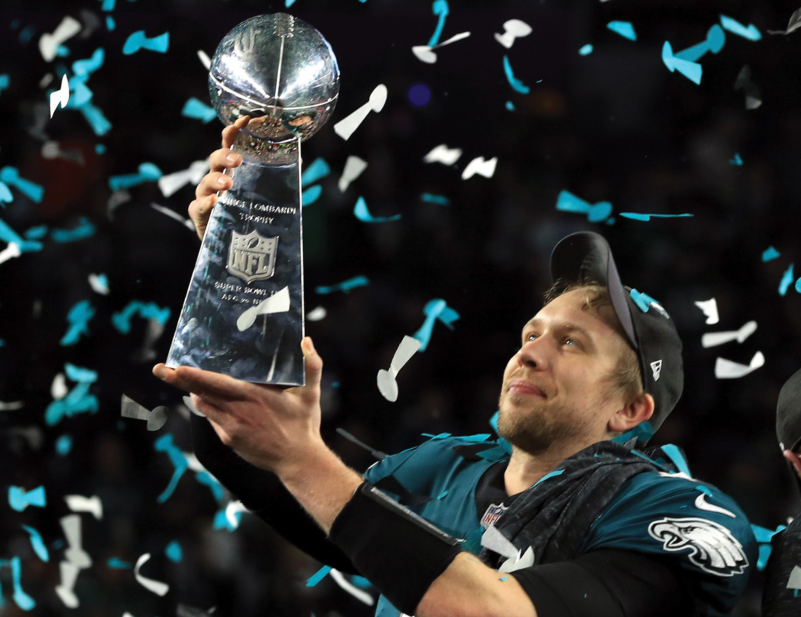
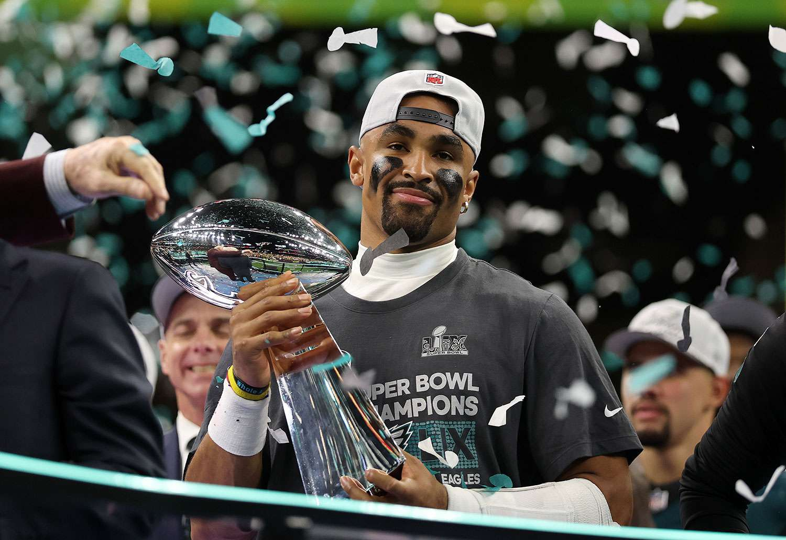

In 2017, the Eagles made were on the road with quarterback Carson Wentz as QB1, the team was on a roll with a record of 10-2. During a match against the Rams, Wentz suffered a knee injury which ruled him out for the rest of the season. Nick Foles was the back up quarterback and helped the team make it through the regular season with a record of 13-3. Foles performed greatly in the playoffs and helping the team reach the Super Bowl. Foles and the Eagles were facing against the non-arguably greatest NFL player of all time, Tom Brady and the Patriots. The tension was high and it was a high scoring game. The Eagles performed their best and making big plays especially with an iconic play call which was know as "The Philly Special". The Eagles won the 2018 Super Bowl against the Patriots 41-33 and Foles being the games MVP. Philadelphia finally got its first Lombardi trophy, but it was just the start.

After a devasting loss in the 2023 Super Bowl against the Chiefs, the Eagles kept that loss in mind, Especially Jalen Hurts, primary quarterback for the Eagles. The Eagles went through a one year rebuild, drafting players such as Zach Baun and Cooper DeJean as well as trading for Saquon Barkley. In the 2024 season, Hurts led the team to a 14-3 regular season record. The Eagles playoffs was insanity. Steaming through the Packers, then a close yet anticipating game against the Rams. In the NFC Championship against the Commanders, The Eagles dominated the match with a score of 55-23. Then the Super Rematch with the Chiefs, the Chiefs were on pace to being the first team to be the only Three-Peat Super Bowl Champions. The Eagles diminished the dreams of the Chiefs with a whopping score of 24-10. Huge plays such as the interceptions from Baun and DeJean kept the momentum going. Mahomes, quarterback of the Chiefs, was sacked an outstanding six times. Victory was already set for the Eagles in which they decided to send in the backup team for the rest of the match. By the end of it all, the score was 40-22. Hurts led Philadelphia to the second Lombardi trophy in over 6 years.
